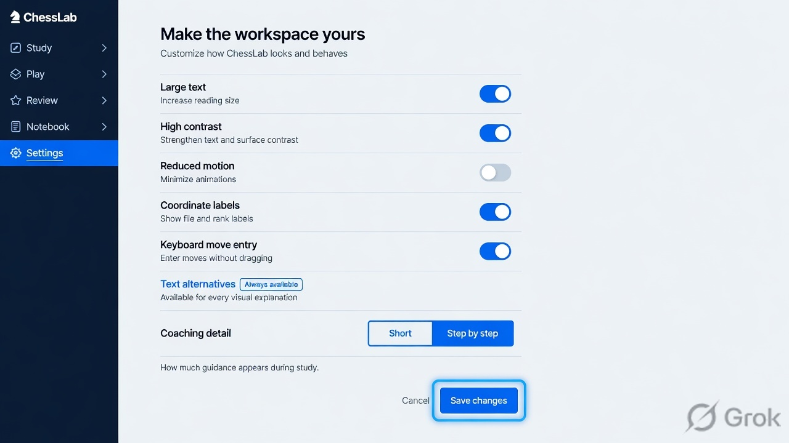

Support · IMAGINE CONCEPT
Make the workspace yours
A proposed part of the ChessLab learning experience.

What this screen must make possible
Settings screen with large text toggle, high contrast, reduced motion, coordinate labels, text equivalents for arrows, keyboard move entry. Show focus ring on an actual control and a compact sample board announcing White knight, f3, selected. Coaching detail Short or Step by step. Controls use text labels as well as color.